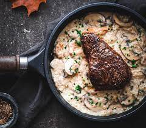

Description
Simple classic steak with mushroom sauce! This fast and fancy dinner can't go wrong!
Try to pick up some good steak cuts because this recipe is very simple that your ingredient matter a lot.
Ingredients
- Steak cuts
- Button mushroom
- Garlic
- Butter
- Flour
- Cooking cream
- Salt
- Pepper
Instruction
- Marinade your steak cut with salt and pepper
- Cook your steak until preferable doneness
- Take out your steak and put some butter
- Add mushroom and scrape the browning in the pan from the steak
- Add some flour bit by bit until it's smooth
- Slowly add some cream until it resembles a sauce
- Add some garlic and cook it for a little
- Serve steak and sauce
Home